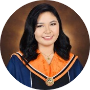

|  | Eunice Trisha AriolaBachelor of Science in Computer Engineering Computer Engineering graduate passionate about software engineering and web development. Capable leader, having led multiple class projects to completion. Have intermediate knowledge in programming languages like Java and C++. |
BS in Computer Engineering (2015-2020)
Colegio de San Juan de Letran-Calamba
Brgy. Bucal, Calamba city Laguna
Technical Support Intern – Innovation HQ Manufacturing Department
Ionics EMS, Inc. (June 2019 - August 2019)
Provided Level 1 support, handled troubleshooting and maintenances as well as monitoring and deployment of
units in the production area.
| Year | University/School |
|---|---|
| 2015-2020 | Colegio de San Juan de Letran |
| 2011-2015 | Canossa Academy |